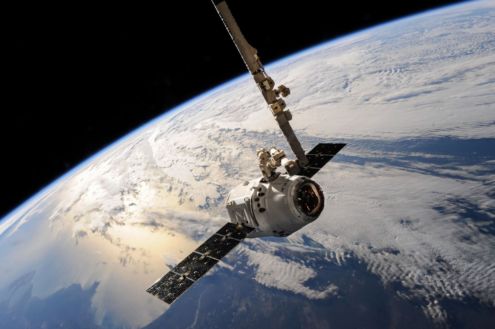
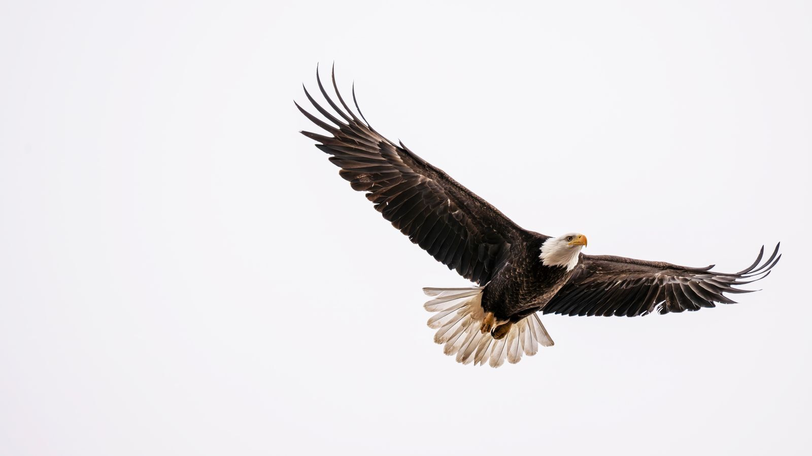
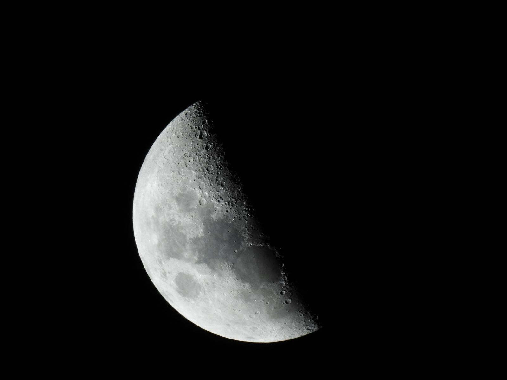
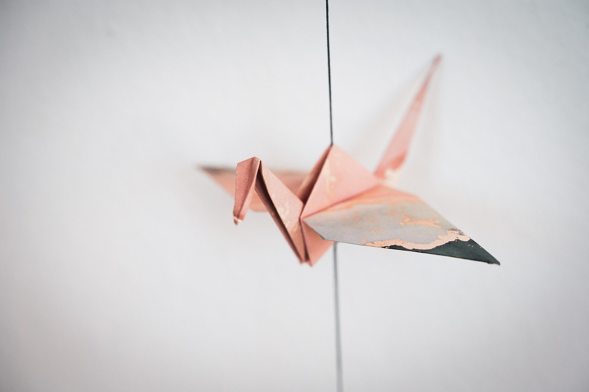
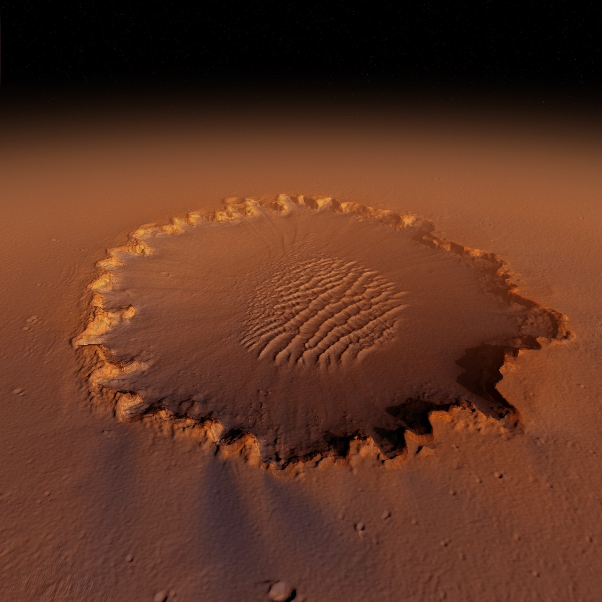

Глава 8
За пределами неба
Зачем крыльям воздух, как шаттл возвращался планированием и что нужно, чтобы летать на Марсе.
Туда, где кончается воздух, вокруг Земли, домой на планировании и к Марсу.

8.1 Зачем крыльям воздух

Крыло не может давить на пустоту.
Крыло создаёт подъёмную силу, двигаясь сквозь воздух. Чем больше воздуха и чем быстрее движется крыло, тем больше подъёмная сила. В уравнении подъёмной силы NASA есть плотность воздуха и скорость1.
На уровне моря воздух весит около 1,2 кг на каждый кубический метр3. Поднимайтесь, и воздух становится реже. Высоко его так мало, что крылу почти не на что опереться.
8.2 Край космоса
Небо не заканчивается стеной. Оно истончается.
Всё же люди проводят линию. Международная авиационная федерация FAI помещает край космоса на высоте 100 км над уровнем моря — это линия Кармана. США используют 80 км, то есть 50 миль4.
Число 100 круглое. Теодор фон Карман предложил искать высоту, где воздух так разрежен, что крылу пришлось бы лететь со скоростью спутника, чтобы держаться. Сам он цифру не опубликовал. Юрист по космическому праву Эндрю Хейли применил его идею и получил около 84 км5.
В 2018 году астрофизик Джонатан Макдауэлл показал, что спутники могут делать больше одного витка ниже 100 км, и предложил 80 км5. FAI назвала доводы за снижение линии «убедительными» и предложила собрать экспертов, чтобы это обсудить6.
8.3 Циолковский и Королёв

Школьный учитель, потерявший слух в детстве, рассчитал, как ракета может достичь космоса. Десятилетия спустя инженер, чьё имя держали в секрете, её построил.
Константин Циолковский в десять лет после скарлатины потерял слух и учился сам, дома. Он стал учителем в Калуге. В 1911 году он написал: «Земля — колыбель человечества, но нельзя вечно жить в колыбели»7.
Его формула ракеты говорит, что скорость ракеты зависит от двух вещей: как быстро вырываются назад газы и какая часть начального веса — топливо. Чтобы выйти на орбиту, ракета должна почти целиком состоять из топлива, поэтому он предложил ступени, которые отделяются, когда пустеют8,7.
Сергей Королёв руководил созданием ракеты Р-7, которая вывела в космос Спутник и Юрия Гагарина. В 1938 году его арестовали и отправили в заключение. При жизни мир знал его только как Главного конструктора. Он умер в 1966 году9.
8.4 Спутник и Лайка

В октябре 1957 года металлический шар размером с пляжный мяч начал пищать с орбиты.
4 октября 1957 года Советский Союз запустил первый искусственный спутник — шар диаметром 58 см и массой 83,6 кг. Научных приборов на нём не было, только радиопередатчик, чьё «бип-бип» ловили по всему миру. Он облетал Землю примерно за 96 минут11,12.
Через 22 дня сели батареи. 4 января 1958 года он вошёл в атмосферу10.
3 ноября 1957 года второй спутник поднял собаку по кличке Лайка — первое животное на орбите Земли. Вернуть её было невозможно, и на орбите она прожила лишь несколько часов. Её помнят как первое животное, облетевшее нашу планету10.
8.5 Гагарин и Терешкова

«Поехали» — с этим словом Юрий Гагарин покинул Землю.
12 апреля 1961 года Юрий Гагарин облетел Землю на корабле «Восток-1» — первым из людей. Когда ракета оторвалась от Байконура, он сказал: «Поехали». Полёт длился 108 минут16,17.
В конце, примерно в 7 км над землёй, он покинул капсулу в катапультном кресле и спустился на собственном парашюте в Саратовской области17.
16 июня 1963 года 26-летняя Валентина Терешкова стала первой женщиной в космосе. Она работала на текстильной фабрике и прыгала с парашютом в местном аэроклубе. Её позывной был «Чайка». Она летала почти трое суток18,19.
8.6 Скафандр и выход в космос

Чтобы попасть туда, где кончается воздух, его нужно взять с собой.
В 1935 году Эмилио Эррера, инженер из испанской Гранады, сконструировал герметичный скафандр для полёта на аэростате выше 20 000 м. У шлема были визор, микрофон и своя система дыхания22. До полёта началась гражданская война в Испании, и он так и не состоялся23.
18 марта 1965 года Алексей Леонов вышел из корабля «Восход-2» и около 12 минут парил в открытом космосе — первым из людей. В пустоте его скафандр раздулся и стал жёстким. Не спрашивая Землю, он стравил часть воздуха и смог согнуться настолько, чтобы вернуться внутрь20.
Леонов был ещё и художником. Он взял в космос цветные карандаши и сделал первые рисунки Земли с орбиты20.
8.7 Хронология: в космос

Читайте сверху вниз: от расчётов учителя до вертолёта на Марсе.
- 1903Константин Циолковский выводит формулу ракеты8.
- 4 октября 1957Первый искусственный спутник Земли10.
- 12 апреля 1961Юрий Гагарин — первый человек в космосе16.
- 16 июня 1963Валентина Терешкова — первая женщина в космосе18.
- 18 марта 1965Алексей Леонов первым выходит в открытый космос20.
- 20 июля 1969«Аполлон-11» садится на Луну. Нил Армстронг и Базз Олдрин идут по ней24.
- 12 апреля 1981Стартует первый «Спейс шаттл», «Колумбия», ровно через 20 лет после Гагарина25.
- 15 ноября 1988«Буран» делает два витка и садится без экипажа32.
- 29 октября 1998Педро Дуке — первый испанец в космосе, на борту «Дискавери»26.
- 21 декабря 2015Ступень ракеты с орбитального пуска впервые возвращается и садится вертикально48.
- 19 апреля 2021Ingenuity совершает первый полёт с двигателем на другой планете39.
8.8 Ракетоплан X-15
Его сбрасывали с бомбардировщика, он включал ракету на две минуты или меньше и возвращался планированием.
Три ракетоплана X-15 совершили 199 полётов с 1959 по 1968 год. Бомбардировщик B-52 поднимал каждый примерно на 13 700 м и отпускал27.
Двигатель работал от 80 до 120 секунд. Остаток полёта, всего 8–12 минут, проходил без тяги и заканчивался посадкой планированием на скорости около 320 км/ч на сухое дно озера. Вместо основных колёс у него были лыжи, как у саней27.
Он развил 7274 км/ч, 6,7 Маха, в 1967 году и поднялся на 107,96 км, выше линии 100 км, в 1963 году27.
8.9 Домой на планировании
Некоторые космические аппараты садятся как планёры. Ничто их не тянет. Они падают вперёд.
Орбитальный корабль «Спейс шаттл» садился без тяги двигателей. Его планирование домой начиналось примерно за час до касания, на другой стороне планеты29. NASA даёт ему качество около 1, против около 70 у высококачественного планёра, ведь ему нужно было сбросить скорость примерно с 27 800 до 400 км/ч28.
Он заходил на посадку под углом около 20 градусов — в шесть с лишним раз круче пассажирского самолёта — и касался полосы на скорости 343–364 км/ч. Второй попытки не было29.
Советский «Буран» летал один раз. 15 ноября 1988 года он поднялся без экипажа, сделал два витка вокруг Земли и сам сел на Байконуре. Его создатель, РКК «Энергия», сообщил, что корабль такого класса впервые сел полностью автоматически30,31.
8.10 Бумажные самолёты в стратосфере

Из космоса бумажный самолёт ещё никто не запускал. Но аэростаты поднимали их на треть пути.
В 2010 году команда британского сайта технологических новостей The Register подняла бумажный самолёт Vulture 1 на аэростате над центральной Испанией. Его отпустили примерно на 27 300 м, почти 90 000 футов34,36. Книга рекордов Гиннесса признала это самым высоким запуском бумажного самолёта35.
В 2015 году научный кружок школы Кесгрейв близ Ипсвича в Англии побил этот рекорд. Их Stratos III отпустили с высотного аэростата на высоте 35 043 м37,36.
Это примерно вдвое выше, чем летал «Конкорд», и около трети пути до линии 100 км оценка38.
8.11 Оригами-самолёт, который так и не запустили

Японская команда планировала сбросить бумажные самолёты с космической станции. Самолёты испытали. Запущены они не были.
В 2008 году Такуо Тода, глава Японской ассоциации оригами-самолётов, и Синдзи Судзуки, инженер-аэрокосмик Токийского университета, объявили план: выпустить маленькие оригами-самолёты с Международной космической станции. Японский астронавт должен был выпустить около 100 штук с высоты около 400 км44.
В начале 2008 года небольшой прототип в форме космического челнока испытали в гиперзвуковой аэродинамической трубе Токийского университета. Он выдержал скорость в 7 раз больше скорости звука, число Маха 7, и температуры, которые называют около 230–250 °C44,45.
Со станции не был запущен ни один самолёт. Запуск предварительно назначили на 2009 год. В 2009 году команда отложила его: отследить самолёты за примерно недельное снижение почти невозможно, и никто не был уверен, что хоть один переживёт вход в атмосферу46.
8.12 Марс: вертолёт в разреженном воздухе

На Марсе воздух примерно в сто раз реже. Ingenuity всё равно полетел.
19 апреля 2021 года Ingenuity от NASA стал первым аппаратом, совершившим управляемый полёт с двигателем на другой планете. Он поднялся примерно на 3 м, или 10 футов39. Всего он совершил 72 полёта, последний — 18 января 2024 года39.
NASA пишет, что плотность марсианского воздуха у поверхности меньше 1 процента от земной; в справке о посадке сказано — около 1 процента. Вертолёт должен быть лёгким, с лопастями больше и быстрее, чем нужны вертолёту того же веса на Земле39,40,41.
Два винта Ingenuity по 1,2 м в поперечнике вращались примерно со скоростью 2400 оборотов в минуту. Земные вертолёты обычно делают 450–50041. В разреженном воздухе крылу нужно двигаться быстрее или быть больше, чтобы дать ту же подъёмную силу.
8.13 Цифры полёта на Марсе
Воздух давит на крыло тем сильнее, чем он плотнее и чем быстрее летит крыло. На Марсе этот напор совсем мал.
Величина ½ρv², половина плотности на квадрат скорости, называется динамическим давлением и обозначается q2. Подъёмная сила равна коэффициенту подъёмной силы, умноженному на q и на площадь крыла1.
При той же скорости воздух Марса даёт около 1,3 процента земного q оценка. Крылу там нужна скорость примерно в 8,8 раза выше или площадь примерно в 77 раз больше для той же подъёмной силы оценка. Но сила тяжести на Марсе — лишь около 38 процентов земной, так что нужная подъёмная сила меньше. В итоге: скорость примерно в 5,4 раза выше или площадь крыла примерно в 29 раз больше оценка.
С учётом неопределённости плотности на Марсе, от 0,010 до 0,022 кг/м³, множитель скорости — примерно от 4,6 до 6,8, а множитель площади — примерно от 21 до 47 оценка. Считайте всё это порядками величины, а не предсказаниями.
8.14 Ракеты, которые возвращаются

Почти всю космическую эру ракета летала один раз. Теперь некоторые возвращаются и летят снова.
«Спейс шаттл» был частично многоразовым. Один только «Дискавери» совершил 39 полётов с 1984 по 2011 год — больше любого другого орбитального корабля47.
21 декабря 2015 года первая ступень ракеты Falcon 9 компании SpaceX, только что помогшая отправить спутники к орбите, вернулась и села вертикально на мысе Канаверал. Ступень орбитального пуска сделала это впервые48. В марте 2017 года уже садившаяся ступень полетела второй раз49.
Над той же идеей работают и другие. Испытательная ступень ESA Themis, созданная, чтобы показать, что Европа умеет вертикально взлетать и садиться, стояла на стартовой площадке в Швеции в 2025 году. Когда мы проверяли, первого подскока она ещё не сделала50.